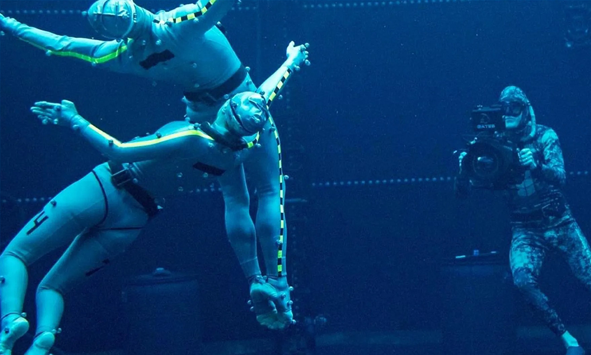

Story
About
Avatar:The Way of Water
Set more than a decade after the events of the first film, “Avatar: The Way of Water” begins to tell the story of the Sully family (Jake, Neytiri, and their kids), the trouble that follows them, the lengths they go to keep each other safe, the battles they fight to stay alive, and the tragedies they endure.
"Jake Sully lives with his newfound family formed on the planet of Pandora. Once a familiar threat returns to finish what was previously started, Jake must work with Neytiri and the army of the Na'vi race to protect their planet." We also know that even though there are set to be three sequels after this one, each movie will be a stand-alone story with Landau saying that "the journey across all four movies will create a connected saga".
Into the mix will be the return of the RDA mining operation to Pandora, forcing Jake to take his family to the "perceived safe harbour" at the reef where they meet the Metkayina. To really capture the importance of water, Avatar 2 filmed its motion-capture scenes underwater. We also know there's been a bespoke sign language created for the movie by Baby Driver's CJ Jones, a deaf actor who's been hired to create a "new Na'vi sign language".
Production
- 
The first successful run of the underwater motion capture technology, after extensive testing, took place on November 14, 2017. The scene involved featured the new generation cast, who were trained for six months so that they could hold their breath for long periods.
As a result, the cast can hold their breath within the two to five minute range and act underwater without the need for scuba gear. Cameron was quoted as being very pleased by the capture data results, saying that they "have basically cracked the code" on underwater motion capture. A small test tank was being used with plans to move to a larger tank in January.
The underwater scene featured dialogue in "a kind of sign language". Kate Winslet, who plays a character from the same clan as the new generation cast, also underwent similar free-diving training as she insisted on doing all her own water work.